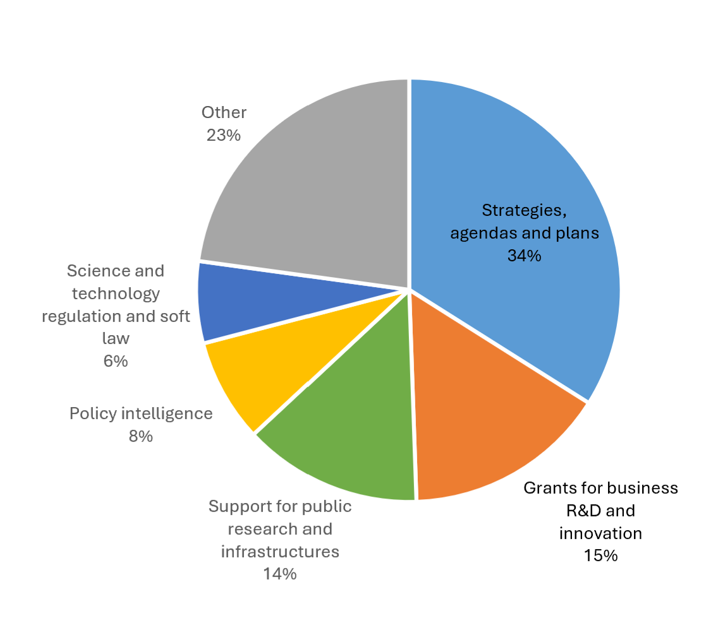
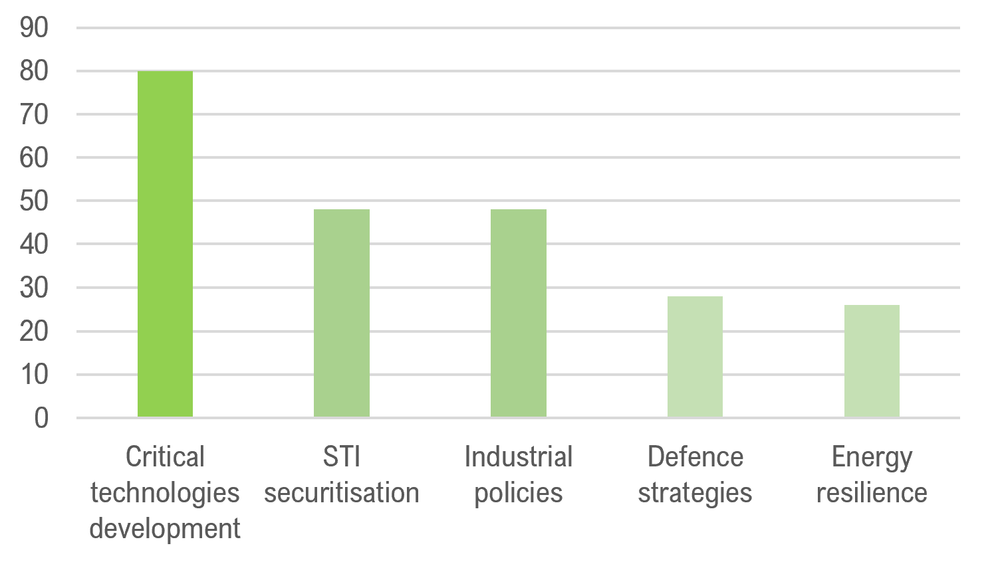
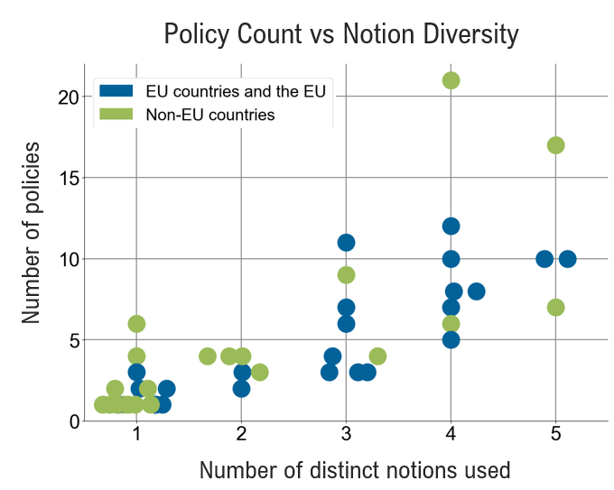

Abstract
This data story analyses strategic autonomy as a rising priority in international STI policy. Drawing on new data from the EC-OECD STIP Compass, covering 231 policy initiatives from 44 countries, it explores how STI policy contributes to strategic autonomy through five key notions: industrial support, critical technologies, STI securitisation, energy resilience, and defence capabilities. We show that the linkages between STI policy and strategic autonomy are multi-layered, and describe design options for such policies, informing evidence-based policymaking in a more interconnected yet contested global innovation landscape.
1. Strategic autonomy as an emerging STI policy topic
Amid rising geopolitical tensions, technological leadership is recognised as a key driver of economic prosperity and security, prompting governments to make technological mastery central to their security policies. The 2025 OECD STI Outlook documents how this strategic shift plays out in several ways across member countries. Among various measures, governments support the development of capabilities in critical technologies such as semiconductors, artificial intelligence, quantum computing, and advanced materials to gain economic advantages and reduce dependence on others. They also use industrial policies to support entire technology ecosystems rather than just individual sectors and invest in dual-use R&D that serves both security and economic goals to get maximum value from their spending.
Beyond developing technologies, policymakers also fear that without appropriate oversight, unwanted knowledge transfer, e.g., through international research partnerships, could harm national security, economic competitiveness, and trust in research collaboration. As a result, recent OECD analysis shows that many OECD countries now treat unauthorized information sharing and foreign interference in public research as serious security threats, putting in place measures to block unwanted state and non-state access to both basic and applied research.
The OECD, in partnership with the European Commission, released a new dataset in the Science, Technology and Innovation Policy Compass in October 2025. This dataset is based on a biennial policy survey and comprises information on 8,700 STI policy initiatives from 63 countries and the European Union (EU). The 2025 survey included a question on STI policies related to Strategic autonomy and critical technologies for the first time. This data story analyses data on 231 policies reported to this question by 44 countries. While the data are self-reported and may not fully capture all STI measures relevant to strategic autonomy, they offer insights into the diverse connections between STI policy and strategic autonomy.
2. How do STI policymakers support strategic autonomy?
STI policies support strategic autonomy in diverse ways, as shown in Figure 1. A rough third of policy initiatives in our sample are implemented through Strategies, agendas and plans-type instruments (34%), indicating a concern with developing and planning strategic autonomy policies. Grants for business R&D and innovation are the second most frequent type of instrument (15%), underscoring that STI policymakers consider private sector innovation essential to safeguard strategic autonomy. Equally important are instruments to support public research, including research grants and support for research infrastructures (14%). This indicates policymakers also consider more upstream parts of the innovation chain, where new knowledge and technologies are discovered and explored through basic research. Smaller shares of policy instruments concern policy intelligence, which help policymakers identify strategically important businesses and understand emerging technology trends, and regulation and soft laws, which often relate to the governance of emerging technologies.
Figure 1: Instrument types of strategic autonomy policy initiatives

Source: OECD analysis based on the EC-OECD STIP Compass, Edition 10/2025.
3. How do STI policymakers understand strategic autonomy?
A main reason for the diversity of policy approaches to supporting strategic autonomy is that policymakers understand strategic autonomy in different ways. A review of the data reveals five thematic notions: critical technologies, industrial support, STI securitisation, energy resilience, and defence capabilities.
Policies on critical technologies support the development of capabilities in and access to technologies such as AI, biotechnology, quantum computing, and semiconductors to foster technological sovereignty. Many of these policies focus on one critical technology, for example the Advanced Materials R&D Development Strategy in Korea and the AI Opportunities Action Plan in the United Kingdom. Others focus on several such technologies, for example STEP The Critical Technology Support Fund in Poland and the Critical Technologies Challenge Program in Australia.
Industrial support policies strengthen domestic firms in key industries to enable economic development in a competitive and contested international environment. Policies have diverse foci, from strategic development of industries and assisting commercialisation of innovation to enhancing business environments. Examples include TechEU grants by the EU and the National Data Center Plan in Chile.
Policies for STI securitisation target earlier stages of technological readiness and are concerned with preserving national innovative capacity by protecting scientific and technical assets while preventing external interference. These policies, such as Norway's White Paper on the Research System - Secured Knowledge in an Uncertain World and Belgium's Service Control Strategic Goods initiative address multiple areas, encompassing research security, export controls, and cybersecurity.
Other policies focus on energy resilience, securing energy supply for domestic firms, supporting technologies for generating and storing energy or reducing its consumption, and lessen dependence on energy imports. These initiatives typically support either clean energy technology development, e.g., Germany's National Hydrogen Strategy, or industry decarbonisation, e.g., Turkey's Green Transformation Support Program.
Defence capability policies work in different ways. Portugal's Defence+Science Programme, for example, promotes dual-use technologies by bringing together defence, civilian, and research actors. Other policies, such as the Civil Protection and Civil Defence in the Security System in Poland, focus on assessing opportunities related to both economic and defence while considering the security and safety risks.
4. How do STI policy mixes for strategic autonomy compare?
In our sample, the notion of Critical technologies development dominates. Figure 2 shows that they occur in 80% of the countries reporting policies under the strategic autonomy question of our survey. Countries may or may not focus on Industrial support and STI securitisation, both notions occur in about half of countries. Defence strategies and Energy resilience are in focus in less than a third of countries.
Figure 2: Prevalence of policy notion across countries

Source: OECD analysis based on the EC-OECD STIP Compass, Edition 10/2025.
The number of policies in our sample varies across countries, with the median at four, and a range between one and 22 policies. Figure 3 maps this variation against a score of strategic autonomy notion diversity. For this score, the occurrence of each of the five notions in a country is counted as one, no matter how often the notion appears. Countries closer to the maximum diversity score of five address strategic autonomy in more comprehensive ways.
Figure 3 shows that those countries reporting a larger number of strategic autonomy policies tend to score higher on notion diversity. In EU economies, there are more diverse policy initiatives reported compared to non-EU countries, possibly because of the strong focus on strategic autonomy in the European Economic Security Strategy. The cluster to the bottom left corresponds to countries reporting only one or a few policies, and that are focused on one distinct strategic autonomy notion, in most cases, Critical technologies development. More diversified policy mixes are also common, with three distinct notions occurring in nine countries, and four notions occurring in eight countries. All five notions co-occur only in Ireland and Korea.
Figure 3: Notion diversity and policy counts across countries

Source: OECD analysis based on the EC-OECD STIP Compass, Edition 10/2025.
5. Diverse data in the STIP Compass speaks to strategic autonomy
The STIP Compass database comprises data on thousands of policies, covering the entire range of STI policies from many countries. This analysis has focused on a limited portion of this data, reported in answer to the survey question on STI policies related to strategic autonomy and critical technologies. However, the STIP Compass database contains further policy data related to the notions of strategic autonomy considered here and that could be included in a more extensive analysis. These include policy data on Research security, Ethics and governance of emerging technologies, STI Internationalisation, Financial support to business R&D and innovation, Decarbonisation, and more. Considering these data as well could show that strategic autonomy policy notions besides Critical Technologies development are more prevalent than the analysis suggests.